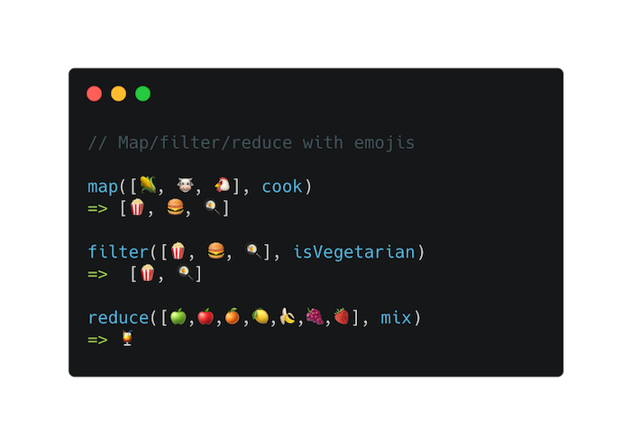

👩🏫 JS Intermédiaire 02bis -Tableaux : d'autres méthodes fonctionnelles
⚠️ Avant de commencer cette quête, tu dois avoir terminé la quête suivante :
Introduction
Cette quête rajoute quelques méthodes couramment utilisées sur les tableaux à ton arsenal .
🤓 À la fin de cette quête, tu comprendras:
✅ Comment utiliser every pour vérifier si toutes les valeurs d'un tableau répondent à une condition
✅ Comment utiliser some pour vérifier si au moins une des valeurs d'un tableau répond à une condition
✅ Comment réduire (reduce) un tableau pour obtenir une valeur unique
Every
La méthode every vérifie si tous les éléments d'un tableau répondent à une condition. Le résultat de la méthode every est un booléen.
Ex : Nous voulons tester si tous les éléments sont supérieurs à 10 :
const myArray = [11, 34, 54, 32, 54];
console.log(myArray.every(element => element > 10));
// true
🔬 Expérience
Mettre en place la fonction checkIfAdult qui doit vérifier si tous les membres d'une équipe sont des adultes (leur âge doit être supérieur à 18 ans)
https://codesandbox.io/s/ex-every-ycv4o
Montrer la solution|||javascript|||Problèmes pour trouver la solution ? |||0|||Cacher
function checkIfAdult(array) {
if (array.every((element) => element.age > 18)) {
console.log("All the players have the required age to play");
} else {
console.log("At least one of the team player doesn't have the minimum age");
}
}
Some
some est très similaire à every, excepté qu'il suffit d'un élément du tableau vérifiant la condition pour que cette méthode renvoie true.
Ex : Nous voulons tester si au moins un des éléments est supérieur à 30 :
const myArray = [11, 34, 54, 32, 54];
console.log(myArray.some(element => element > 30)); // true
Reduce
La méthode reduce réduira le tableau à une seule valeur.
Ex : Nous avons un tableau de nombres et nous voulons connaître la somme de tous les nombres
const myArray = [13, 200, 404, 430, 10];
console.log(myArray.reduce((acc, currentValue) => acc + currentValue));
// 1057
Le premier argument donné à la méthode reduce est une fonction de rappel qui sera exécutée pour tous les elements du tableau (par défaut à partir du 2ème).
Cette fonction sera rappelée par reduce avec les arguments suivants :
- L'accumulateur : c'est le résultat de toutes les opérations précédentes. Dans notre cas, l'accumulateur commence avec la valeur du premier élément dans le tableau.
- La valeur de l'element actuellement parcouru dans le tableau, qui sera égale à 200 au premier tour de la boucle, puis 404, puis 430, et ainsi de suite...
Cette fonction de rappel retourne la valeur de l'accumulateur pour l'itération suivante.
La méthode reduce quand à elle retournera la valeur finale de l'accumulateur une fois les éléments parcourus.
Voyons ce qui se passe en détail :
/*
Premier tour : acc = 13, currentValue = 200. acc + currentValue = 213. L'accumulateur est maintenant à 213.
Deuxième tour : acc : 213, currentValue = 404. acc + currentValue = 617. L'accumulateur est maintenant à 617.
Troisième tour : acc : 617, currentValue = 430. acc + currentValue = 1047. L'accumulateur est maintenant à 1047.
Quatrième tour : acc : 1047, currentValue = 10. acc + currentValue = 1057. L'accumulateur est maintenant à 1057.
Renverra le résultat final : 1057.
*/
Cette méthode peut être un peu difficile à comprendre au début. Ne t'inquiète pas et laisse toi le temps de la pratiquer.
Préciser une valeur de départ
Tu peux spécifier une valeur départ comme deuxième argument de la méthode reduce. Par exemple, si je veux que mon accumulateur commence à 100 :
const myArray = [13, 200, 404, 430, 10];
console.log(myArray.reduce((acc, currentValue) => acc + currentValue, 100));
// 1157
🔬 Expérience
Utilise la méthode reduce pour trouver le prix total de ce panier.
Conseil : pour que cela fonctionne, tu devras faire en sorte que la réduction commence à 0, sinon le premier élément sera un objet et non le prix.
https://codesandbox.io/s/ex-reduce-oizpf
Montrer la solution|||javascript|||Problèmes pour trouver la solution ? |||0|||Cacher
const result = cart.reduce((acc, currentValue) => {
console.log(currentValue);
return acc + currentValue.price;
}, 0);
console.log(result);
☝️En résumé
Les tableaux ont de nombreuses méthodes que tu peux utiliser afin de les manipuler
Une image valant 1000 mots :

💪 Défi
Tu as donc l'impression de tout savoir sur les tableaux ?
Ici, tu as un défi à relever pour le prouver !
Ces 2 exercices sont destinés à tester les nouvelles méthodes que tu as apprises sur les tableaux, alors garde-les à l'esprit pour les résoudre.
🏁 Exercice
PARTIE 1
Étant donné un tableau avec différents objets à l'intérieur, représentant des profils d'instructeurs (nom, disponibilité, spécialités), tu dois créer un nouveau tableau qui contient seulement les instructeurs qui connaissent Javascript et qui sont disponibles le week-end.
Si leur disponibilité est all, cela signifie qu'ils sont également disponibles le week-end, il faut donc les inclure aussi.
PARTIE 2
Utilise ce nouveau tableau d'instructeurs disponibles et affiche un message par instructeur disant
Hi nameOfInstructor, we inform you that this weekend you will be doing the support class
PARTIE 3
Modifie le message précédent en vérifiant que si un instructeur connaît aussi Python, le message doit être :
Hi nameOfInstructor, we inform you that this weekend you will be doing the support class and you need to prepare a Python workshop
Fork ce repl.it et poste le lien quand tu as fini comme solution à ce défi.
https://repl.it/@WildCodeSchool/JavaScript-Exercises-Advanced-Arrays
🧐 Critères d'acceptation
- [ ] Tous les exercices sont faits correctement
Ressources partagées sur cette quête
- En live ca aide Tuto [Fr]https://www.youtube.com/watch?v=Bp1fnysQkh0&ab_channel=BenBK